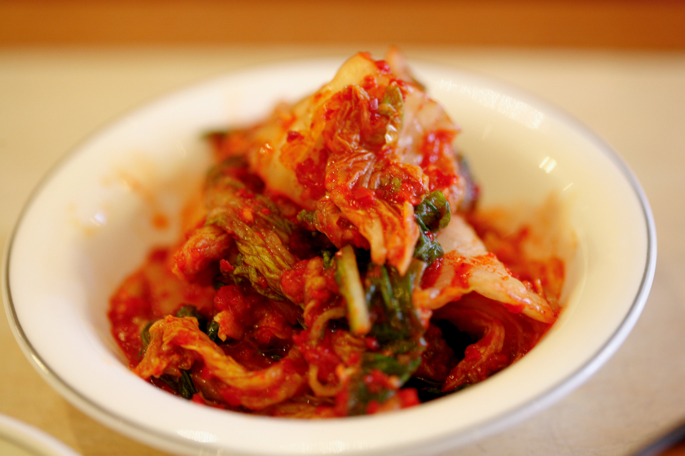

return home
Tofu, Rice, and Kimchi

image by Charles Haynes on Flickr
license info
Description:
This dish is a vegetarian version of a dinner my parents frequently
made when I was a kid - fish, rice, and kimchi. It is simple and
delicious.
Ingredients:
- rice
- kimchi
- extra firm tofu
- cooking oil
- soy sauce
- sesame oil or butter
- furikake
Steps:
- start the rice using whatever cooking method you prefer
- add a little cooking oil to the bottom of a pan
- start heating the pan
- cube half of the block of tofu and spread evenly in the pan
- drizzle the tofu with soy sauce
- tip the pan around to ensure all the tofu cubes make contact with the soy sauce
- cook the tofu for 5-10 minutes, depending on how high the heat is
- flip each cube of tofu and cook for 5-10 more minutes
- when the rice is done, add it to a bowl
- add either butter or sesame oil to the rice
- top rice with a little soy sauce and a lot of furikake
- add as much kimchi as you desire to the bowl
- add the tofu to the bowl
- enjoy!